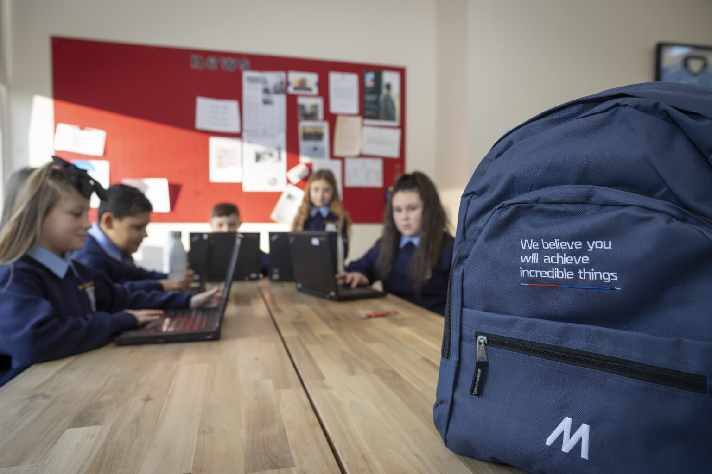

Action
Ensure inclusive and equitable quality education and promote lifelong learning opportunities for all, here are the things you can do to ensure quality education for all
Donate
The Children’s Reading Foundation reports that children who fall behind in reading are likely to become our lowest income-earning adults. The good news is that developing essential readings skills with children is much less expensive and more effective than trying to help them catch up later. By donating your books, you give them a chance to be reused and repurposed by someone else instead of sitting in a landfill. So if you have any books you don't read anymore consider donating them to do your part in ensuring we all get the opportunity of quality education
Volunteer
Volunteering connects you directly with those around you, and is particularly beneficial for your local community and sense of belonging. Volunteering can help people feel less isolated in their surroundings and form meaningful connections with the people around them.
Stay Informed
Designate specific times each day to catch up on the latest news and trends. staying informed is essential for personal development, keeping you safe, for making good descisions aswell as the ability to adapt By understanding the complexities of the world's issues, we can engage in meaningful discussions and and come to undetstandings.